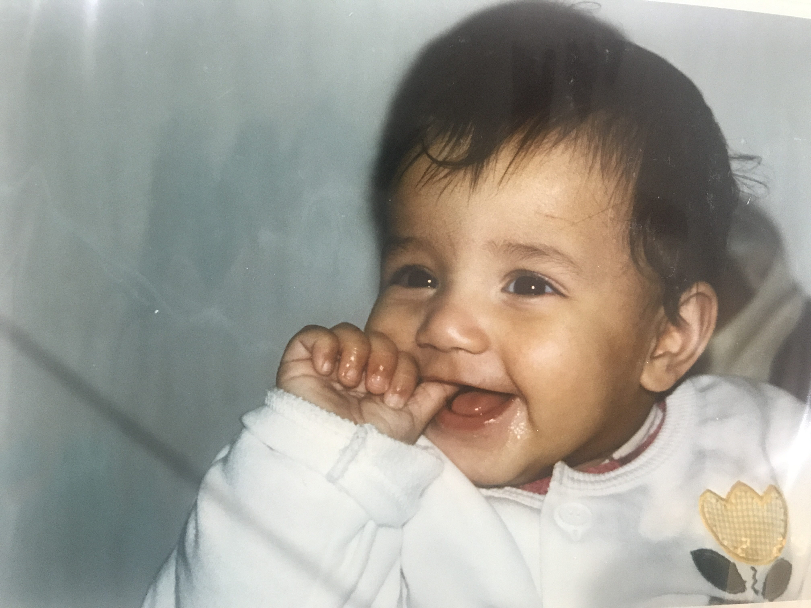
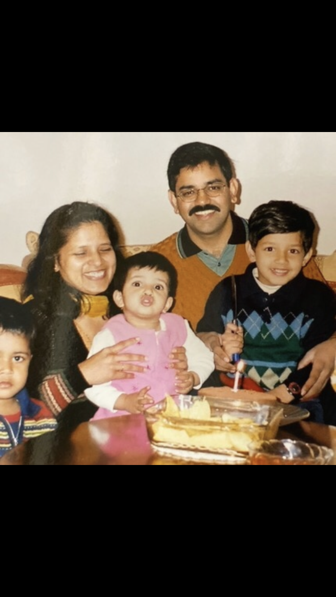
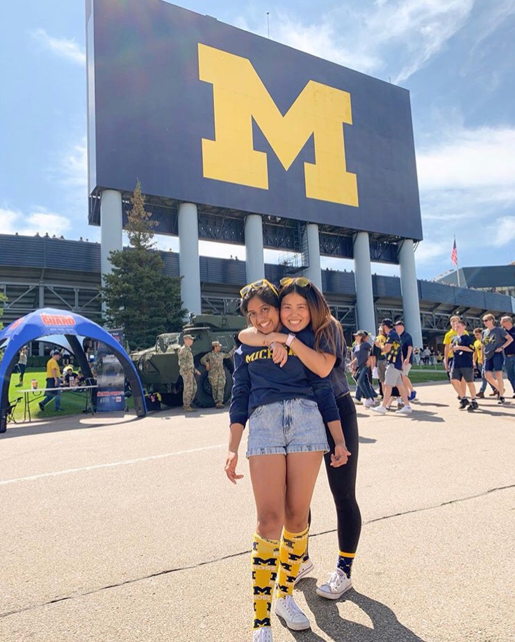
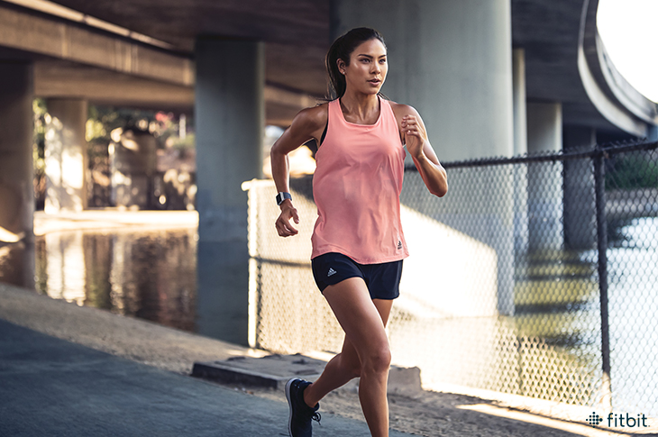
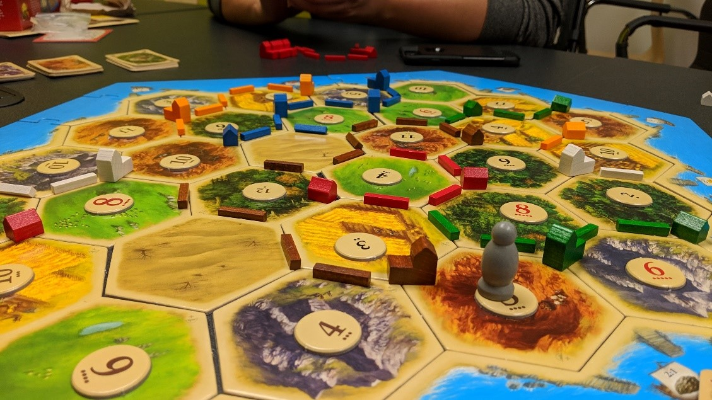

London
Hi! My story starts on a mediocre day in London, where summer was just around the corner. May 7, 2001. I was birthed.
Yokohama
Soon after, we moved to Japan and lived there for five years! I went to international school (so I didn't have to learn Japanese) and loved our bathrooms!!
New Jersey
Next Stop: New Jersey! My dad found a new job, so we said goodbye to our beloved home in Japan and moved to the States.
Michigan
And now I'm a student at the University of Michigan. I'm pursuing a major in Computer Science and still figuring out what I'd like my minor to be - be it Political Science, Business, or even Spanish.
I am currently a second semester sophomore and enjoy going to football and basketball games.

In my free time, I enjoy playing the piano. In high school, it was more of an intense extracurricular activity and required lots of practice for competitions. However, now I can take a step back and just learn how to play any song I want. I am now learning the La La Land theme song.
Over quarantine, I started to work out more as well! It all began with the Chloe Ting hype on TikTok, but now I love incorporating strength and HIIT workouts into my daily routine. I feel so much stronger :)


I love watching Youtube whenever I get a chance. Some of my favorite youtubers include Yes Theory and Casey Neistat!
I've been at home for the past year, so it's quite nice watching Netflix with my family! From documentaries like "The Last Dance" to binge watching "The Queen's Gambit," it's been amazing.
I learned to play Catan mid-March of 2020 and since then, I've been absolutely addicted. My family gets super competitive while playing, so it's always fun to play!

I enjoy spending time outdoors and played a ton of badminton with my brother last summer. We ordered a net from amazon and were able to play for hours in our backyard. Would recommend!!

I finally got back into reading my senior year of high school, and I recently started Barack Obama's autobiography called "A Promised Land." I hope to finish the book by the end of this month!